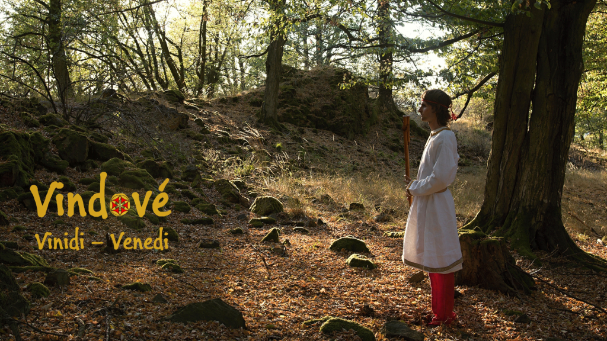
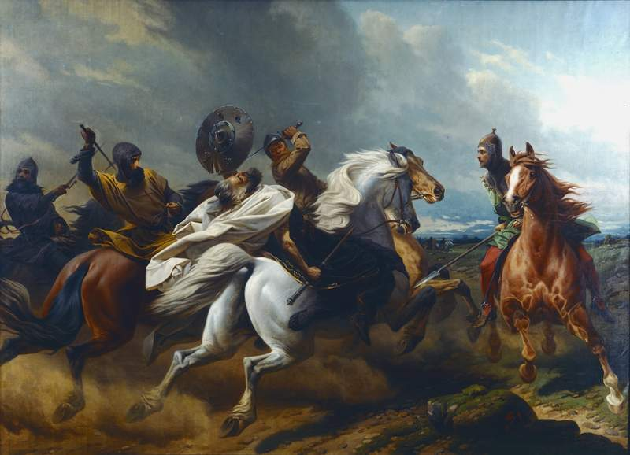

Z dávných dob pochází mnohé představy a stopy v krajině, které nás ovlivňují až do dnešních dnů. Kdysi dávno se v širém okolí rozkládaly husté listnaté lesy, ze kterých se antickým spisovatelům zatajoval dech. Úrodná říční údolí, lužní lesy, dubohabřiny a bučiny, které všechny během staletí a v důsledku změn počasí získávaly vládu nad různými územími, tvořily jádro naší krajiny protkané sítí vzdálených vesnic s loukami a políčky. Hojné řeky, potoky a studánky představovaly svou podstatou základ života, základ, který dal vzniknout představám o její léčivé i kouzelné moci, představě o živé vodě. Naši předkové po krvi dorazili na tato území před dávným časem. Mohli si představovat, že jako Labutě* vyletěli z veliké řeky za Sluncem, aby se pak dotekem Země proměnili zpět v lidi, kteří mají tato místa obývat a pečovat o ně, být zadobře s duchy lesa, vílami, mluvícími kameny, moudrými bylinami, docela lidsky se projevujícími zvířaty a dalšími bytostmi z bájeslovných představ. Říkejme těmto lidem v tomto úvodním příběhu Vindové (více viz níže), ti v bílém, přesně tak, jak jim snad začali říkat jejich jižní sousedé. Vindové vytvářeli vlastní společnost, výrobní i obchodní místa, pěstovali obilí včetně Žita a rádi jedli kaše s ovocem. Postupem času, po „lužické krizi“, tvořili jezerní hradiště, aby se ubránili nájezdům vzhledově podobných kočovníků z jihovýchodu. Tehdy si mohli vyprávět o přízracích jedoucích na Koních, o rybím brnění a hrdinovi jménem Plugos, který se je pokusil odrazit. Když později nastal rozkvět doby železa, šířily se představy o kouzelných kovářích, kteří očarovávají zemské draky, získávají železnou rudu a za noci z ní vytváří předměty nejpodivnějších tvarů.

Daleko na polední straně zažívala rozkvět antická společnost a čilé obchodní styky se projevovaly všude podél jantarové stezky. Tehdy se začínají ve spisech objevovat první jména sousedů sídlících v lesích mezi antickou společností a Vindy. Mám na mysli různé keltské kmeny, Bóje, Volky, Vindeliky a další, doplňované na východní straně Skýty a Sarmaty. Na severovýchodní straně sídlili Baltové a místa, odkud se jantar, tyto slzy stromů, přinášel. Jaké pověsti vznikaly v oné době, kdy se jantarová stezka částečně přesunula k západní straně na území dnešních Čech, to se můžeme jen dohadovat. Každopádně se keltské obyvatelstvo jasně objevuje, bohatne a udržuje styky s antickým hmotným prostředím. Mohyly jsou znovu otevírány, tyto cesty do země mrtvých, a přidávány jsou do nich nové pohřby, například hrob velmože, který se mohl jmenovat Margewid. Nic však netrvá věčně. Postupem času se na severozápadní straně daly do pohybu první národy z velké rodiny, které si nárokovaly širé území, kde vytlačily původní obyvatele či jejich územím pouze prošly, aby se smísily s obyvatelstvem jiných krajů. Tito lidé byli zprvu známí jako Kimbrové a Teutoni. Snad je mnohé národy včetně Vindů považovaly za cizince, neboť slovo „cizí“ přímo vychází z označení Teutonů, „tudí“. Tehdy je Bójové odrazili a keltská hradištní města získala pevné kamenné valy, které příchozí neuměli dobýt. Ty valy, jejichž stopy můžeme obdivovat v naší krajině dodnes. Vindové se přesunují na východní stranu, daleko od zaplavených míst, od povšimnutí antických spisovatelů. Léta plynula, Bójové mizí v jihovýchodní straně, kde se mísí s ostatními národy. Území Čech převážně obývá široký národ Svébů a jiných jim podobných. Antická říše se postupně utápí v jejich nájezdech, především západní část. Dalecí nomádi, kteří prorazí Evropu jak nevychovaný blesk, jsou pak jistě jednou z posledních kapek. Dokonce i Gótové, podle jména Vinitharius snad někdy bojující s Vindy, musí těmto podivným kočovníkům ustoupit. Ze zmatku však opět vzniká řád. Vindové a Sporové uzavírají spojenectví, aby se ubránili společnému nepříteli. Ostatní podobné národy se kolem nich seskupí a vznikne síla, která opět umožní rozchod všemi směry, zpět do střední Evropy i dále. Vindové, v příbězích snad lidé od velikého proudu ze srdce světa, jsou nyní známí jako Venedi, Vinidi a Slované.
Dávno je již tomu, kdy na našem území muž jménem Sámo sjednotil Slovany zvané Vinidové proti „říši“ nomádů na východní straně a proti germánské „říši“ na straně západní. Takový hrdina si jistě zasloužil příběhy a básně, které by oslavovaly jeho statečnost a spojení s nadpřirozenými božskými silami. Srbové pak z místa zvaného „Bójka“ (snad okolí Čech a Lužice) podle císaře Konstantina VII. putují na polední stranu i se svou totožností, stejně tak i Charváti. Vznikají skupiny, které známe i z dnešních časů. Všichni tito a mnozí další zanechali stopy v naší vlastní minulosti. Náš první známý hrdinný příběh se však odehrává za vlády Karla Velikého (od něj vzniklo slovo „král“), který si dělal zálusk i na naši krajinu. Tehdy v roce 805 bylo jeho vojsko statečnými Čechy odraženo, neboť nemohlo snášet husté lesy a vysoké skály, na nichž se rozkládala dávná hradiště. Takový český lech či vladyka oné doby se mohl jmenovat Knovid, Perut či Stojmír. Vladyka, který vedl úspěšnou obranu a na jehož počest byly pořádány slavnosti s ohni hořícími na návrších. Nejpůsobivěji snad působí boj Polabských Slovanů za zachování své totožnosti a náboženství proti útlakům německých velmožů, jakými byli Gero či Jindřich Lev. Příběh slovanského knížete původem z Rujány jménem Kruto je nejvíce výmluvný, avšak silnou řečí vládl i Niklot a Přibyslav.
„Mužové, jak na mně, tak na mém kmeni bylo spácháno veliké násilí. Byli jsme vyhnáni z rodné země a připraveni o dědictví našich otců. Vy sami jste ještě dovršili tuto křivdu, když jste vpadli na naše území a obsadili jste města a vsi, které nám náležejí podle dědičné posloupnosti. Dáváme vám tedy na vybranou mezi životem a smrtí. Jestliže budete ochotni nám otevřít pevnost a vrátit nám zemi, jež nám náleží, vyvedeme vás v pokoji, s manželkami, dětmi a vším jměním. Pokud někdo ze Slovanů snad odcizil něco z věcí, jež vám náležejí, nahradím vám to dvojnásob. Jestliže nebudete chtít odejít a budete zarputile hájit toto město, přísahám vám, že pokud nám bude přát bůh a vítězství, všechny vás zabiji ostřím meče.“ – kníže Přibyslav, Kronika Slovanů, Helmold z Bosau, 12. století

Autor obrázku: Theodor Schoepke
Spolu s útlakem přicházelo šíření feudální moci a křesťanství, které hodlalo vymýtit či úplně pozměnit původní představy sahající až do dob jeskynních maleb. Tvrdohlavě trvalo na své jediné pravdě, která však pravdou v žádném případě nebyla, což již dnes víme. Tato tvrdohlavost pak pozastavila vývoj celé společnosti včetně dbaní na čistotu a skutečné vzdělání, jaké známe z antiky a jiných starověkých kultur.
„Na Bílé hoře prý v místě, kde stojí letohrádek Hvězda, kdysi z nitra Země vyrůstal posvátný Dub, u něhož se scházeli starší rodu k vážným rozhodnutím. Pod stromem hořel věčný oheň, do něhož byly vhazovány vonné byliny, které po vdechnutí přinášely sny, jejichž prostřednictvím se dalo nahlédnout do budoucnosti. Jako díkůvzdání za sílu, která vycházela ze Země, se jednou na rok konala pod větvemi stromů slavnost, při níž bylo obětováno obilí ptákům a chléb zvěři. Když se v Čechách ozval hlas prvního zvonu, svolávajícího křesťany k ranní modlitbě, posvátný oheň sám od sebe zhasl. Mnozí se ho pokoušeli znovu zažehnout, ale z plamenů se valil hustý černý dým a oheň nabýval zlých tvářností. Proto byla jáma, v níž po léta hořel, zasypána, aby v pozdější době nemohlo dojít k neštěstí. Prastarý Dub vzal za své, když započala stavba břevnovského kláštera. Ve chvíli, kdy byl položen základní kámen, udeřil do stromu z čistého Nebe blesk a mohutného velikána spálil. Vypráví se, že mnozí popel z posvátného Dubu uschovali do váčků, které nosili na krku, nebo ho zakopali pod práh svého domu. Věřili, že jim přinese štěstí, sílu a zdraví. Ke každoročním slavnostem se však lidé scházeli i nadále ve strachu před silami Země.“ – Pražské stromy, Aleš Rudl
„Před každým zákoníkem je třeba se zmínit o boží pravdě. Proto svatý Konstantin v prvním zákoně napsal a řekl toto: Každá vesnice, v níž se konají oběti nebo přísahy pohanské, ať je předána božímu chrámu [církvi] se vším majetkem, který patří pánům v této vesnici. Ti, kteří konají oběti a přísahy, ať jsou prodáni [do otroctví] s veškerým svým majetkem a získaný výnos ať se rozdá chudým [křesťanům].“ – Zákon sudnyj ljudem, 9. století
„Nemáme s vámi nic společného. Otcovských zákonů se nevzdáme, jsme spokojeni se svým náboženstvím. U křesťanů jsou zloději, jsou lotři, kteří lámou nohy a oslepují. Křesťan vůči křesťanu se dopouští všech druhů zločinů i msty. Pryč s takovým náboženstvím!“ – obyvatelé Štětína, životopis Oty Bamberského podle Herborda, 12. století
Postupem času však došlo ke kulturnímu sjednocení snad všech evropských národů s menšími či většími odlišnostmi. Středověk postupně předával své žezlo novověku, kde však stále přetrvávaly mnohé dávné představy, snad v jiném hávu, ale přesto přetrvaly ve smýšlení, v příbězích o hrdinech, vílách, švarném slunečním bohu, nočním lovci a dalších, a ve zvycích během letnic, svatojánské noci, žní a obecně v průběhu roku. V době sběru pohádek a jejich zapisování pak došlo k oživení těchto představ a zvyků a připomenutí si naší dávné minulosti.
„‚Ba věru, člověku se někdy zdá, jako by ty stromy živy byly,‘ řekl rýznburský myslivec. ,Vím to ze zkušenosti. Jedenkráte – je tomu již několik let – vykázal jsem stromy k poražení. Hajný nemohl jít, já šel ku kácení dohlížet. Drvoštěpové přijdou a hotují se porazit nejdřív krásnou Břízu; ani poskvrnky na ní nebylo, pěkně stála jako panna. Zahleděl jsem se na ni, a tu se mi zdálo – je to k smíchu, ale bylo mi tak – jako by se mi k nohám skláněla, ratolestmi jak by mě objímala, a do uší mi znělo: Proč chceš usmrtit můj mladý život, co jsem ti udělala? Vtom zaskřípělo ostří pily po kůře a vjelo do jejího těla. Já nevím, jestli jsem vykřikl, ale to vím, že jsem chtěl zdržovat drvoštěpy, aby dále neřezali, ale když se na mne s podivem dívali, zastyděl jsem se, nechal je pracovat, ale utekl jsem do lesa. Celou hodinu jsem bloudil a ustavičně mne ta myšlenka pronásledovala, že mne Bříza prosí, abych jí život nekazil. Když jsem se konečně přemohl a na místo došel, byla poražena, ani lístečku se na ní nehýbalo, jako mrtvé tělo ležela. Mne pojala lítost, jako bych byl vraždu spáchal. Kolik dní do mne nic nebylo, ale nezmínil jsem se nikomu, a kdyby právě dnes řeč o tom se nebyla strefila, nebyl bych se nikdy zmínil.‘“ – Babička, Božena Němcová
Myslím, že je naší povinností ujmout se toho, co různé představy, dávné zvyky, lidové zkušenosti a stopy dávných národů v krajině představují, a dále si naše vlastní dědictví uvědomovat a sami k němu přispívat – především tak, aby nám i v dnešní době bylo co nejvíce užitečné, podněcovalo nás upřímně zkoumat svět a nabídlo nám životní poučení, která shromažďovalo po tisícovky lét a zim u našich předků v krajině, v níž žijeme.
Země už od nejstarších dob prožila mnohá krásná i divoká období. Ledové doby současných čtvrtohor byly střídány krásou lesů a průzračných vod, které přirozené lesy dokáží očišťovat a zachovat pro rozvoj budoucího života. Dravé sopky třetihor stály bok po boku kvetoucím krytosemenným rostlinám včetně mnohých listnatých stromů, které dokázaly využít soužití s hmyzem ke svému opylování, zatímco nahosemenné rostlinstvo a jehličnaté stromy druhohor se neohroženě hýbaly ve vzdutém větru, ve kterém se proháněli diví draci. Prvohory se svými úchvatnými výtrusnými rostlinami, ohromnými stromovými přesličkami, umožnily vzniknout pestrému společenství druhů a následovaly tak starohory s jejich prvními mnohobuněčnými řasami. V prahorách pak všechen život na naší krásné Zemi mohl získat společného prapředka – díky tomu jsme všichni jako součást života a součást Přírody příbuzní. Krajina a předci se vzájemně ovlivňují, neboť jsou zkrátka jedním, v průběhu minulosti i přítomnosti utvářejí jeden druhého. O spojení mezi předky, plodností a květenou vyprávějí prastaré příběhy. Klid stromů nám může pomoci alespoň pocitově pochopit smysl tohoto dávného vzájemného vztahu. Když se pak podíváme na čerstvé ovoce, bez jehož paliva by náš mozek ani mozek jiných podobných primátů nemohl dostatečně vyrůst, pochopíme, že bez spolupráce není budoucnost možná. Stromům děkujeme doslova za vznik našeho rozumu, za to, že můžeme dýchat čerstvý vzduch, jíst zdravé jídlo a pít čistou vodu, kterou díky nim můžeme v krajině uchovat pro naše potomky. Děkuji přírodním vědám, biologii, fyzice, chemii, ekologii, geologii, bioarcheologii, archeobotanice, ale také historii, archeologii, antropologii a dávným zaznamenaným příběhům a myšlenkám za to, že mi pradávný a neustále probíhající vzájemný vztah mezi Přírodou a předky pomohly alespoň trochu pochopit. Stromy spolupracují s hmyzem skrze své květy, s živočichy obecně pak skrze své plody, zatímco přes kořeny pomocí houbových sítí obdržují živiny. Příroda nás neučí pouze o boji, ale i o neustálé spolupráci. Ukazuje nám proměny věků, učí nás přizpůsobovat se. Díky ní můžeme obdivovat skutečnost, že stromy propojují a přímo představují samotný život. (z doslovu ke knize Zlaté srdce)
„Stromy tvoří les a ten má obrovský význam v hydrologickém cyklu krajiny. Bylo zjištěno, že na pevnině pokryté pouští, poli nebo nízkým rostlinstvem srážky klesají velice rychle na vzdálenost několika set kilometrů od pobřeží. Pokud je ale pevnina pokryta vzrostlým lesem, srážky neklesají, ale naopak mírně stoupají až do vzdálenosti 3 000 kilometrů od moře. Tam, kde byly lesy vykáceny, a to nejen v tropických oblastech, ale i jinde na Zemi, se snížily srážky, zvýšilo se ‚sucho‘; původní husté lesy se změnily v řídké porosty či lesostepi, na mnoha místech se již samy neobnovují, neregenerují a při obnově se neobejdou bez pomoci člověka. V takových podmínkách pak dochází ke zvýšenému projevu globálních klimatických změn, k extrémním projevům počasí vyznačujícím se prudkými silnými dešti a vichřicemi. Pokud by byl na rozsáhlejších plochách les, udržoval by vhodnější a příznivější mezoklima a umírněný ráz počasí. Voda znamená život. Je nezbytností pro stromy i pro lidi. A díky stromům se dostává k lidem. Chraňme si stromy, jsou pro nás zárukou přežití.“ – Stromy a voda, Luboš Úradníček, Život se stromy, Marie Hrušková, Václav Větvička a spol.
Z dob dávno minulých, kdy se našim předkům říkalo Čechové, Zličané, Charváti a Milčané, či ještě dříve Slované, či ještě mnohem dříve Vinidové, Vindové a Venedi, pochází moudrost spjatá s koloběhem Přírody, jejíž stopy je možné spatřit ve velikonočním sběru jarních bylin, čištění studánek v období letnic, hledání zlatého květu kapradí o svatojánské noci a v dalších zvycích, rčeních a písních. Krajina ukrývá otisky života našich předků v podobě valů dávných hradišť, skalních pevností a tajemných mohyl. Ukazuje nám, jak naši předkové hospodařili a co se od nich můžeme dnes naučit. Díky poznání minulosti a neustále stoupajícímu poznání Přírody, stromů, rostlin, zvířat a hub, získáme nejen povědomí o naší vlastní totožnosti a o tom, odkud pocházíme, ale spolu s ním i poučení pro dnešní dobu, abychom lépe poznali svět, tvořili pěkné příběhy, byli sami k sobě upřímní a vážili si života kolem nás.
Před tisícem let naší krajině vládly hluboké listnaté hvozdy, v nichž lidé u večerních ohňů uctívali dávné bohy. Při jedné z jarních oslav zasáhnou mladou Radoslavu tajemné sny, které ji přenesou do hluboké minulosti, kdy její předkové vařili bylinná piva, bojovali proti nepřátelům, na dnech studánek nacházeli zlaté mince z dob Keltů a budovali svá obydlí na valech jejich dávno zaniklých měst. Radoslava se rozhodne vypravit k Vlčí hoře za svým moudrým bratrancem Ladem, aby jí pomohl odhalit význam jejích vidění, ve kterých k ní za bílého dne promlouvají postavy z příběhů předávaných již po celé generace … Zobrazit více o knize Zlaté srdce →
Kdyby se tato stránka jmenovala „Čechové“, těžko by se dal obhájit zájem o dějiny našich předků a krajiny před 9. stoletím. Před tímto obdobím je totiž nepřesné tvrdit, že by nějaký kmen na našem území podobné označení používal, neboť o tom zkrátka nemáme doklady. Podobné je to i s označením „Slované“, které označuje široké kulturně a jazykově spřízněné skupiny obyvatel střední a východní Evropy zhruba od 5. století našeho letopočtu (některými badateli zpochybněno). Rozhodně tak nemůžeme označovat naše předky pro krajině, krvi a zvycích například od doby 2 000 let před naším letopočtem.
Jedním z nejstarších názvů, který se v souvislosti s územím severovýchodní části střední Evropy objevuje, je název Venedi u Tacita, Vouenedai u Ptolemaia a Venethi (v protikladu ke středomořským ‚Veneti‘) u Jordana, který toto označení přímo spojuje s pozdějšími Slovany. Fredegarova kronika zmiňuje označení „Vinidové“ pro slovanské obyvatele dnešních Čech patřících do Sámova kmenového svazu. V Moissacké kronice se pak přímo objevuje označení Čechové-Vindové. Pro kmeny a národy, které dříve tvořily součást „Sámovy říše“, bylo poté používáno označení Vendové, Vindové apod., což přetrvává dodnes. Zde mám na mysli korutanské Slovany, kteří se spolupodíleli na vzniku národa Slovinců, Lužické Srby a další včetně Polabských Slovanů.
„Anno 805. Karolus imperator misit filium suum Karolum regem cum exercitu magno an Cichu-Windones* (i. e. Bohemos-Windones); et alium exercitum cum Adulfo et Werinario, id est cum Baioariis; tertium vero transmisit cum Saxobinus super Hwerenofelda et Demelchion. Et ibi pugnaverunt contra regen eorum nomine Semela, et eum, et ille dedit duos filios eis pro fidelitate; et tunc perrexerunt super Fergunna. Et venerunt ad fluvium qui vocatur Agara illi tres hostes insimul, et inde venerunt ad Camburg**, qui et [illum obsiderunt, et] vastaverunt regionem illam in circuitu, [in ista parte] Albiae*** [et ultra Albiam]. Et postea cum victoria reversus est Karolus rex ad patrem suum in Francia. Quartus vero exercitus cum classe magna navium perrexit in Albia, et pervenit ad Magedoburg, et ibi vastaverunt regionem Genewara, postea reversi sunt in patriam suam.“ – Moissacká kronika
I když nevíme přesně, jak daleko do minulosti lze toto označení vysledovat a pro jaké kmeny a národy se v průběhu dějin používalo, vzhledem k relativně nízké dlouhodobé genetické i kulturní proměnlivosti obyvatel východní části střední Evropy ve sledovaném období můžeme takto naše přímé předky po krajině, krvi a zvycích označit, aniž bychom vyloučili místní názvy kmenů (Lesňané od lesa, Polané od pole apod.) či rodových skupin. Tomu napomáhá i předpokládané značné rozšíření baltoslovanské větve indoevropských jazyků v minulosti.
Některé známé (více či méně spřízněné) národy a kmeny se na našich předcích, krajině, zvycích a představách výrazně podepsaly, i těm je vedle „Vindů“ věnováno místo.
*Čechové-Vindové
**Camburg/Canburg („Kaninský hrad”)
***Labe
„Niklot pozoroval, že odchod výpravy, který stvrdila přísaha, je neodvolatelný. Proto tajně připravil námořní vojsko, překročil [lübeckou] úžinu a přistál s loďstvem u ústí řeky Trave, aby zaútočil na celou provincii Vágrů dříve, než se saské vojsko rozlije po jeho území. … Rovněž okrsek zvaný dargunský a všechno, co na této straně řeky Trave vybudovali Vestfálci, Holanďané a ostatní příchozí z ciziny, strávil lačný plamen. Povraždili statečné muže, kteří se snad ve zbrani pokusili postavit na odpor, a jejich ženy a děti odvedli do zajetí. Ušetřili však holsatské muže, kteří žijí na druhé straně Trave, v oblasti na západ od Segebergu, zastavili se na polích osady Kucalina a dále již netáhli. Slované nevyplenili ani vesnice, které leží na rovině [zvané] Schwentinfelde a sahají od říčky Schwale až po potok u Grimmelsbergu a Plöner See, a nevztáhli ruku na statky lidí, kteří tu žijí. Tehdy se šířily řeči, přetřásané všemi, že tento krutý zmatek rozdmýchali někteří Holsatové ze záští k příchozím, jež hrabě povolal zdaleka k osídlení země. Proto také byli jediní Holsatové ušetřeni, jak vidno, obecné pohromy.“ – Kronika Slovanů, Helmold z Bosau, 12. století
Krajina proměněná v poušť? Z původních listnatých hvozdů, lužních lesů a nespočtu chladivých studánek zbyly jen roztroušené pozůstatky? Proč? Jedno z nejpůsobivějších děl světa, Ovidiovy Proměny, nám ukazují, co to znamená být člověkem. Otevřené vnímání světa, chápání vlastních pocitů a používání zdravého rozumu často ustupují vášním, skrytým v našem nitru. Některé z nich nám pomohou obrátit pozornost společnosti k řešení skutečně důležitých věcí, zatímco jiné, neřízené, nás mohou zahubit, proměnit v jedem prolezlý kámen či odstranit z povrchu světa:
„Čím více vkládá do úst, tím větší je jeho touha. Jak moře hltá zemské vody, polyká každý potok – a hladové plameny nikdy neodmítnou další pokrm, spalují dřevo a hledají ho víc a víc, mohutnější jsou jeho hromady a oheň tak hladem nenasytnější – tak i Erysichthónovy rouhavé rty žádají všechno jídlo, v jednom dechu. Každá další potrava je důvodem pro další potravu, a prázdnota tak vzniká před jeho očima (…) A nakonec, když takové zlo spotřebovalo všechno, a jeho smrtelná choroba neustále vyžadovala více jídla, počal Erysichthón trhat své končetiny, bořit do nich zuby, a onen nešťastný muž tak postupně, kousek po kousku, pozřel vlastní tělo.“ – Proměny (VIII. kniha), Publius Ovidius Naso
Jsme schopní překonat sami sebe? Ochotní upřímně rozpoznat své pocity a pravé důvody, které řídí náš pohled na svět, a uvědomit si, kam opravdu chceme směřovat? Co chceme zachovat? Stejnou myšlenku přímo vyjádřil moudrý Lúkiános:
„A po tom všem se vy opovažujete chtít nás měnit a naše jednání a záměry přivádět na pravou cestu! Jako kdybychom to, co děláme, dělali často ze špatného úmyslu, ačkoliv vy sami při svých vlastních činech neuvažujete a nic neděláte s úsudkem a s rozvahou, ale jen ze zvyku nebo z náruživé vášně. Proto se ničím nelišíte od lidí, které unáší proud: ti jsou strháváni vírem a vás vlečou vaše vášně. Děje se s vámi něco podobného jako s člověkem, který vsedl na splašeného koně: kůň ho rychle unášel, ale on nemohl za žádnou cenu z letícího zvířete seskočit. Někdo ho potkal a zeptal se, kam má namířeno, a on odpověděl: ‚Kam bude chtít …‘ a ukázal na koně. A když se někdo zeptá vás, kam se ubíráte, měli byste bez zakrývání říci, kdybyste chtěli mluvit pravdivě: ‚Tam, kam nás vedou naše vášně.‘ A kdybyste odpovídali jednotlivě: ‚Kam nás vede touha po rozkoši, kam touha po slávě nebo po zisku.‘ Jindy zas vás může unášet hněv, strach nebo i něco jiného, protože vy se nevezete na jednom koni, ale na mnoha koních, na každém jindy, ale všichni jsou splašení a unášejí vás sem a tam. A proto vás také unášejí do propastí a srázů. A vy nikdy netušíte, kdy se kam zřítíte.“ – Kynik, Lúkiános
Bájnou horu již neobklopují hvozdy, ale poušť. Máme ochotu pochopit provázanost života na Zemi, vlastní závislost na čisté vodě, vzduchu a síle, kterou rostliny přijímají ze Slunce, a uvědomit si tak, že krajina, předci a potomci tvoří jeden celek? Že bez zdravé krajiny, která často padá za oběť našim neřízeným vášním, krátkodobému prospěchu a neochotě myslet, nemůžeme přežít? Dokážeme sami sebe nakonec nepozřít? Nezřítíme se do propastí a srázů?
*Labuť (praslovansky olbǫdь), „Bílý pták“, a Labe (praslovansky olbъji), „Bílá řeka“, pochází obojí z indoevropského základu albh-, tj. bílý.